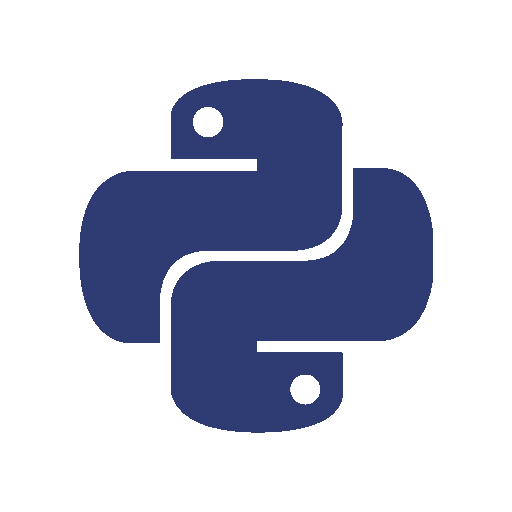

Aronasay is a CLI program like cowsay, but instead of a talking cow, it's Arona from Blue Archive! Make Arona say anything you want with various ASCII art versions to choose from. Perfect for adding some Blue Archive energy to your terminal! Inspired by Momoisay by Mon4sm.
Aronasay is completely open source and free to use. Contribute, modify, and share with the community!

Built with Python and supports version 3.6 and above. Easy to install and run on any platform!
Aronasay can be installed by running one of the following commands in your terminal using either curl or wget. Administrator privileges are only needed for a system-wide installation.
curl -fsSL https://raw.githubusercontent.com/arch2kx/aronasay/main/install/install.sh | sh
wget -qO- https://raw.githubusercontent.com/arch2kx/aronasay/main/install/install.sh | sh